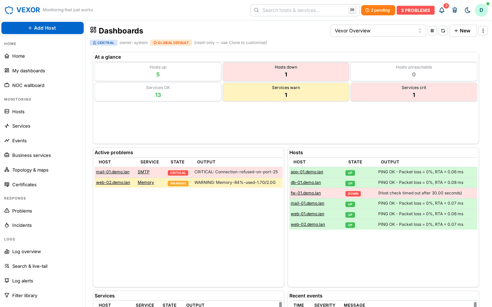
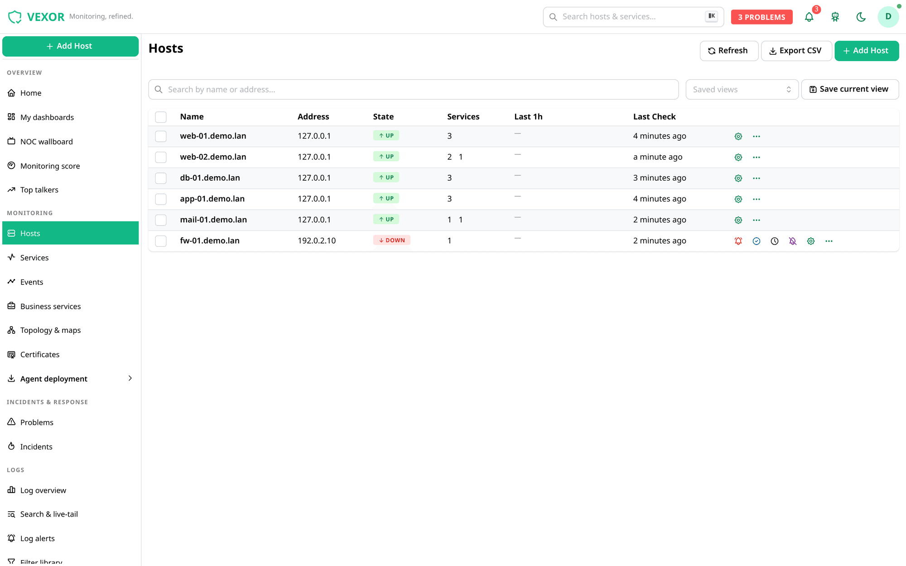
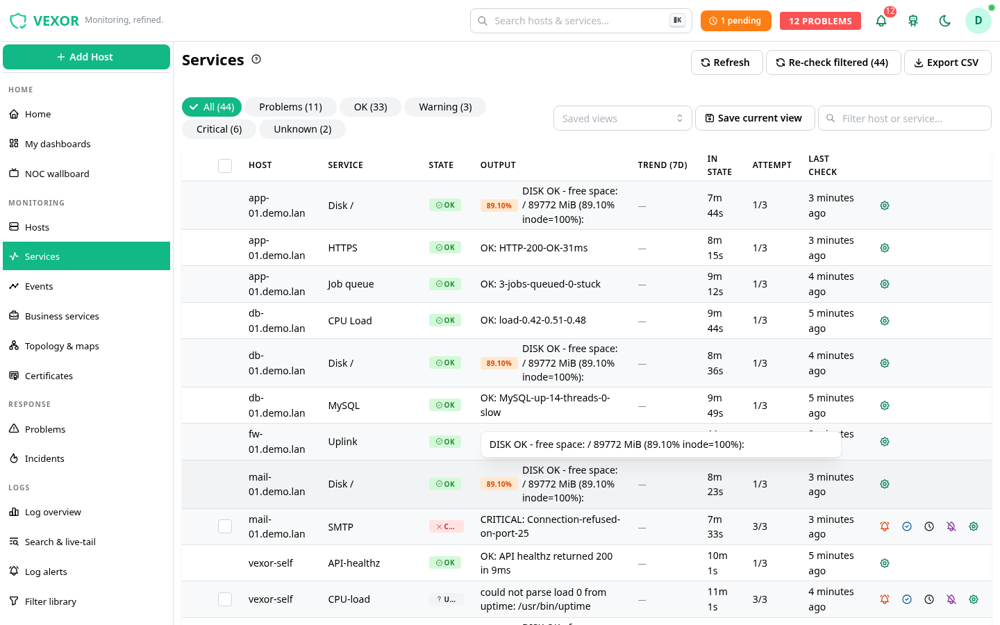
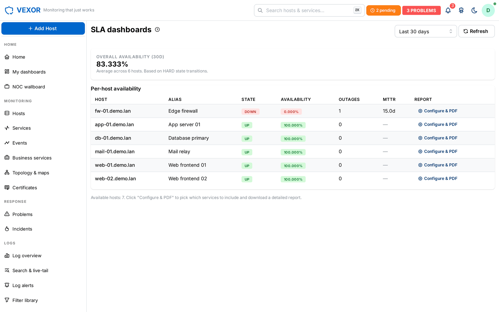
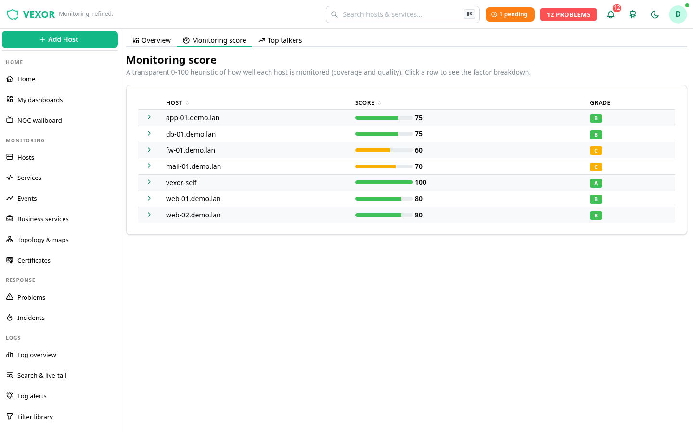
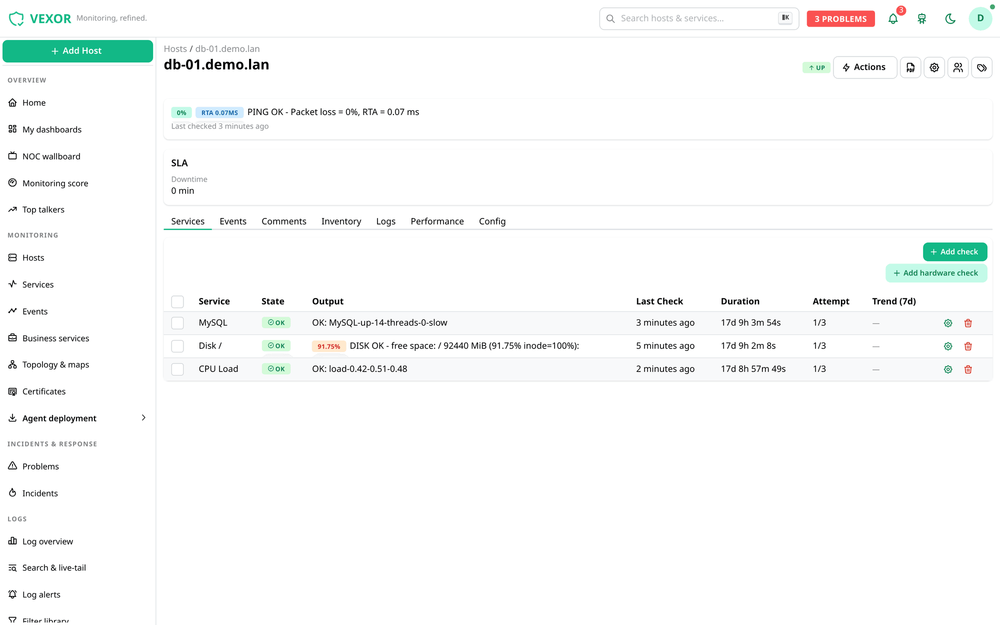

Deploy agents from the browser
Push the NSClient++ (Windows) or NRPE (Linux) agent to a host from the UI — and bundle a few extra packages with it if you need to.
Vexor keeps an eye on your servers, containers, network and services. Add a host and it scans for the obvious things; deploy an agent from the browser when you want deeper checks. Logs, SLA reports and certificate expiry are built in — and it runs on your own hardware, so your data stays with you.
No sign-up. Open the live demo and sign in with demo / demo — read-only, resets every hour. Or self-host in three commands on Rocky 10, or one Docker image anywhere.

The things it's actually good at today.
Push the NSClient++ (Windows) or NRPE (Linux) agent to a host from the UI — and bundle a few extra packages with it if you need to.
Type an address and Vexor probes for ping, SSH, RDP, FTP, HTTP and other common services, so you start with a sensible baseline instead of a blank page.
If a host already has an agent, Vexor notices and offers the deeper checks — CPU, memory, disk, services — as boxes you tick.
Reports built from the monitoring you're already doing — uptime per host and service, no exporting to a spreadsheet.
Point a lightweight shipper at your files and Windows event channels, then search, live-tail and alert on log lines — with anomaly detection when something spikes.
Track TLS/SSL certificate expiry across your hosts and services, so a forgotten renewal never takes a site down again.
Roll up the checks behind an application into a single business-service health, and add synthetic probes that walk a user journey the way a customer would.
Authentication goes through Keycloak / OIDC, so you can plug in your existing LDAP or Active Directory rather than a separate user list.
SQL Server gets a deep dive of its own — point-in-time snapshots, per-database drill-down and an A/B comparison of two moments. Proxmox, VMware and XCP-ng are read-only checks, network devices get config backup with diffs, and there's even OpenVMS if you still run it.
Summarise an incident timeline or a noisy stretch of logs in plain English. Run Ollama locally so nothing leaves your network, or bring your own OpenAI, Claude, Gemini or Azure key if you'd rather.
Choose which NSClient++ build gets deployed — fetch a stable release from upstream, upload your own MSI, or stay on the bundled one. Previous versions stay in the registry, so a bad build is one click to roll back.
Give Vexor a read-only ServiceAccount token and it reads the cluster's own API. Nothing is installed in the cluster, nothing is changed in it, and no workload runs there on Vexor's behalf.
The kind of visibility big platforms sell for a small fortune — self-hosted, and simple enough to run on your own.
The whole flow, start to finish.
An IP or hostname is the entire form.
It probes common services and suggests a baseline of checks to turn on.
Roll out an agent for deeper checks, then follow health, graphs and SLAs.
Real screenshots from a live install, with the new role-based navigation. Click to enlarge.





Two ways to run it. Pick a tab, copy, paste. Every install ships a free trial license — no sign-up.
On a fresh Rocky Linux 10 (or RHEL 10-compatible) server, run as root:
# 1 — add the Vexor repo (also pulls in EPEL, CRB and the GPG keys)
dnf install -y https://repo.vexormon.com/vexor-release-latest-el$(rpm -E %rhel).rpm
# 2 — install the full server (api, ui, naemon, keycloak, db, graphs…)
dnf install -y vexor-server
# 3 — first-run setup (databases, passwords, services, firewall)
vexor-setupThat's it — three commands, no manual repo or dependency wrangling. Supported on x86_64 Rocky / AlmaLinux / RHEL / Oracle Linux 10. Full notes & minimal install →
Prefer Docker, or running on Ubuntu/Debian? The all-in-one image runs the same stack:
# clone and start
git clone https://github.com/sayonarase/vexor-docker
cd vexor-docker
cp .env.example .env # set VEXOR_PUBLIC_URL to how you'll reach it
docker compose up -d
# grab the initial admin credentials (written on first boot)
docker compose exec vexor cat /etc/vexor/.initial-adminThen open https://<host>/. Image: ghcr.io/sayonarase/vexor:latest. Compose file & caveats →
Vexor is a one-person project in active development. Every install gets a free trial license with the full feature set, valid until May 2028, so there's time to actually live with it. If you run servers and try it, I'd like to hear how it goes — bug reports and rough edges included.
Email me / ask a questionTry the live demo in your browser, or self-host it and point it at a real server. Either way, I'd genuinely like to hear what you think.
Demo login demo / demo · read-only · resets hourly · no sign-up